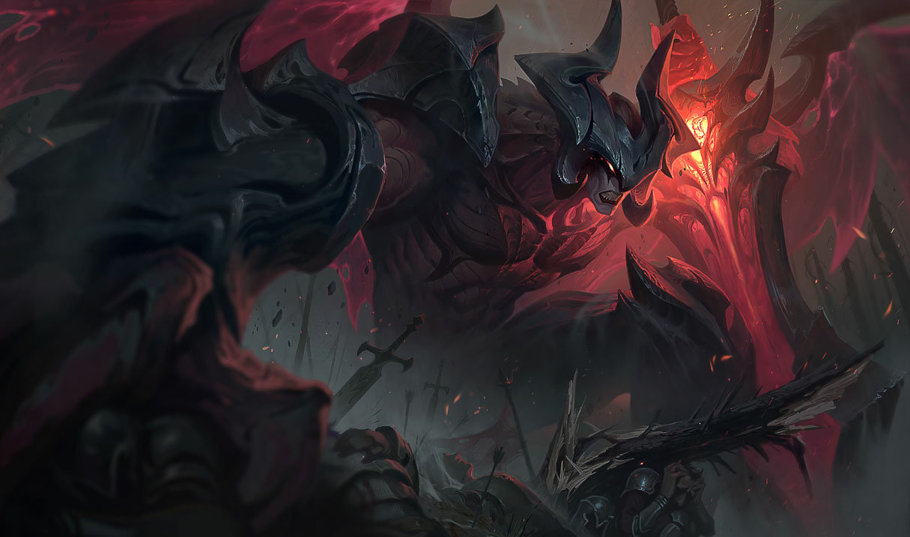

Sylas
Convirtió sus cadenas en sus armas. Ahora hará lo propio con sus definitivas. Que comience la revolución: Sylas ya está disponible.
Publicado: HACE 4 MESES
Leer más
Convirtió sus cadenas en sus armas. Ahora hará lo propio con sus definitivas. Que comience la revolución: Sylas ya está disponible.
Publicado: HACE 4 MESES
Leer más
¡Tantas cosas que ver, tantos campeones que ser! Transfórmate en alguien nuevo: Neeko ya está disponible.
Publicado: HACE 6 MESES
Leer más
Convirtió sus cadenas en sus armas. Ahora hará lo propio con sus definitivas. Que comience la revolución: Sylas ya está disponible.
Publicado: HACE 9 MESES
Leer más
Tu nombre será sinónimo de miedo. Desgarra hasta los huesos de tu rival con la Espada Darkin. Aatrox ya está disponible.
Publicado: HACE 11 MESES
Leer más
El destripador busca venganza. Los sofocará hasta ahogarlos. No hay adonde esconderse. Pyke ya está disponible.
Publicado: HACE 12 MESES
Leer más
La Hija del Vacío ha comenzado su cacería. Adáptate al entorno y descubre nuevas maneras de eliminar a tu presa, Kai'Sa ya está disponible.
Publicado: HACE 1 AÑO
Leer más
Llegó el Aspecto del Crepúsculo. Espera travesuras, caos... ¡y mariposas!
Publicado: HACE 2 AÑOS
Leer más
Dentro de las oscuras vetas de Runaterra, la demonio Evelynn acecha a su siguiente víctima.
Publicado: HACE 3 AÑOS
Leer más
Orianna, antaño una chica curiosa de carne y hueso, es ahora una maravilla tecnológica compuesta exclusivamente de engranajes.
Publicado: HACE 4 AÑOS
Leer más